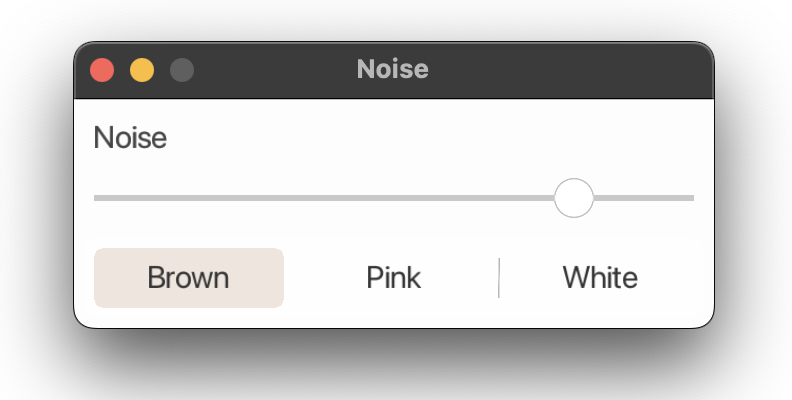
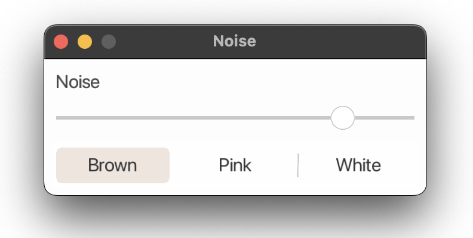

Coracle Rectangle is an superellipse based improved rounded rectangle for LÖVE
See the Github repo for more details and install instructions.
Coracle rectangle now used in Noise


Gogledd Orllewin
LÖVE Rectangle
Coracle Rectangle is an superellipse based improved rounded rectangle for LÖVE
See the Github repo for more details and install instructions.
Coracle rectangle now used in Noise